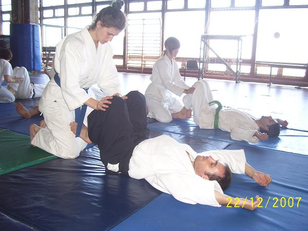

| INICIO | CLASES | TÉCNICAS | VIDEOS | SALUD | SEMINARIO | ORGANIZACIONES | HISTORIA | TEXTOS | BIBLIOGRAFÍA | LINKS |

Técnicas Orientadas a la Salud (Kenkodo)
- Seitaiho.
- Kokyuho.
- Misogi.
- Sotaiho.
- Teateho.
- Seizaho.
Kenkodo: El camino de la salud.
Practicamos también técnicas orientadas al bienestar corporal:
Kenko Taiso:
Es una serie de ejercicios que se practican por uno mismo, por lo general al comienzo de las clases. Sirven básicamente como entrada en calor de los músculos y lubricación de las articulaciones. También es una preparación mental, ya que la técnica que se utiliza para su realización tiene siempre relación con el interior de uno y con el espacio.
Seitaiho:
Secuencia de estiramientos que se practican por uno mismo, por lo general al comienzo de las clases. También se utilizan como entrada en calor de los músculos, lubricación de las articulaciones, preparación del sistema respiratorio y circulatorio y de la actitud mental perceptiva del cuerpo y del espacio.
Kokyu Ho:
En la clase también se realizan ejercicios respiratorios a través de los cuales se aprende a mover calma y ampliamente el diafragma, creando de esta manera una buena circulación sanguinea. También se utiliza para llevar la atención al sonido de la respiración, focalizando la mente en ella. Hay diferentes tipos de ejercicios, como la respiración grande, la respiración suave, la respiración rápida, la respiración con vibración de vocales, etc.
Misogi:
En ocasiones especiales, se realiza un tipo de respiración tradicional llamada misogi, el cual se basa en la respiración rápida. Este tipo de ejercicio tiene como uno de sus objetivos el fortalecimiento de la voluntad. Se puede realizar de diferentes maneras como en Te Musubi (mudra con los dedos de las manos cruzadas), con Bokken, o con la guía de una o dos campanas.
Sotaiho:
Ejercicio realizado de a dos participantes en el cual se realiza una suave manipulación del cuerpo del compañero, el cual recostado y en forma pasiva solo se encarga de respirar. Es una técnica que brinda una gran relajación, al mismo tiempo que flexibiliza músculos y articulaciones. Además quién efectúa la técnica en todo momento tiene una actitud de relación, lo cual da la sensibilidad con el compañero.
Teateho:
Técnica de contacto de la mano con el cuerpo de uno mismo o de otra persona. Se intenta alcanzar una relación más profunda con el cuerpo manteniendo al mismo tiempo la percepción completa. Hay diferentes tipos de lineas corporales para seguir. Este tipo de ejercicio deja normalmente una sensación de bienestar y al mismo tiempo es una práctica de percepción.
Seizaho:
Es la práctica de la meditación propiamente dicha. Cada clase suele terminar con uno o varios ejercicios de este estilo. Puede ser en diferentes posiciones del cuerpo como parado, sentado en seiza (posición de rodillas), sentado en agura (posición con piernas cruzadas), y tambén acostado. La idea es mantener la espalda recta y los ojos cerrados, realizando la percepción del cuerpo y del espacio que se aprende durante la clase. Se intenta con este ejercicio lograr la mayor calma de la mente posible.